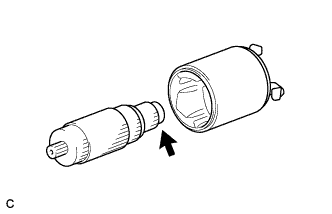
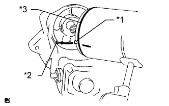

СТАРТЕР (для моделей мощностью 1,4 кВт) > ПОВТОРНАЯ СБОРКА |
| 1. УСТАНОВИТЕ ЯКОРЬ СТАРТЕРА В СБОРЕ |
|  |
Нанесите термостойкую консистентную смазку на подшипник якоря стартера.
Установите якорь на статор стартера.
| 2. УСТАНОВИТЕ ЩЕТКОДЕРЖАТЕЛЬ СТАРТЕРА В СБОРЕ |
Установите щеткодержатель стартера.
Подсоедините 4 щетки к щеткодержателю стартера.
С помощью отвертки отожмите пружину.
Подсоедините щетку к щеткодержателю.
Установите новое уплотнительное кольцо на крышку со стороны коллектора.
Установите новый пылезащитный колпак стартера на крышку со стороны коллектора.
Закрепите крышку со стороны коллектора 2 винтами.
| 3. УСТАНОВИТЕ ВТЯГИВАЮЩЕЕ РЕЛЕ СТАРТЕРА В СБОРЕ |
Нанесите высокотемпературную консистентную смазку на промежуточную шестерню, стальной шарик, возвратную пружину, ролик муфты и фиксатор.
 |
Вставьте стальной шарик в гнездо вала пусковой муфты.
Вставьте возвратную пружину в гнездо вала пусковой муфты.
Установите пусковую муфту, промежуточную шестерню, фиксатор и ролик муфты в корпус привода стартера.
Установите корпус привода стартера на втягивающее реле стартера и закрепите его 2 болтами.
| 4. УСТАНОВИТЕ СТАТОР СТАРТЕРА В СБОРЕ |
Установите новое кольцевое уплотнение на статор стартера.
|  |
Совместите захват статора стартера с канавкой втягивающего реле стартера.
| *1 | Захват |
| *2 | Канавка |
| *3 | Новое кольцевое уплотнение |
Закрепите статор стартера на втягивающем реле стартера 2 стяжными болтами.
Подсоедините вывод к контакту C и закрепите его гайкой.